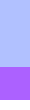
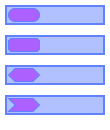
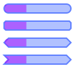

Module: wibox.widget.progressbar
A progressbar widget.
To add text on top of the progressbar, a wibox.layout.stack can be used:
wibox.widget {
{
max_value = 1,
value = 0.5,
forced_height = 20,
forced_width = 100,
paddings = 1,
border_width = 1,
border_color = beautiful.border_color,
widget = wibox.widget.progressbar,
},
{
text = '50%',
widget = wibox.widget.textbox,
},
layout = wibox.layout.stack
}
To display the progressbar vertically, use a wibox.container.rotate widget:

wibox.widget {
{
max_value = 1,
value = 0.33,
widget = wibox.widget.progressbar,
},
forced_height = 100,
forced_width = 20,
direction = 'east',
layout = wibox.container.rotate,
}
By default, this widget will take all the available size. To prevent this,
a wibox.container.constraint widget or the forced_width/forced_height
properties have to be used.
Usage:
wibox.widget {
max_value = 1,
value = 0.33,
forced_height = 20,
forced_width = 100,
shape = gears.shape.rounded_bar,
border_width = 2,
border_color = beautiful.border_color,
widget = wibox.widget.progressbar,
}
Class Hierarchy
- gears.object
-
- wibox.widget.base
-
- wibox.widget.progressbar
Info:
- Copyright: 2009 Julien Danjou
-
Originally authored by: Julien Danjou <julien@danjou.info>
(Full contributors list available on our github project)
Constructors
| wibox.widget.progressbar {[args]} | Create a progressbar widget. | |
Object properties
| border_color | color | The progressbar border color. | |
| border_width | number | The progressbar border width. | |
| bar_border_color | color | The progressbar inner border color. | |
| bar_border_width | number | The progressbar inner border width. | |
| color | color | The progressbar foreground color. | |
| background_color | color | The progressbar background color. | |
| bar_shape | gears.shape | The progressbar inner shape. | |
| shape | gears.shape | The progressbar shape. | |
| clip | boolean | Force the inner part (the bar) to fit in the background shape. | |
| ticks | boolean | The progressbar to draw ticks. | |
| ticks_gap | number | The progressbar ticks gap. | |
| ticks_size | number | The progressbar ticks size. | |
| max_value | number | The maximum value the progressbar should handle. | |
| margins | (table or number or nil) | The progressbar margins. | |
| paddings | (table or number or nil) | The progressbar padding. | |
| value | number | Set the progressbar value. | |
| children | table | Get or set the children elements. | Inherited from wibox.widget.base |
| all_children | table | Get all direct and indirect children widgets. | Inherited from wibox.widget.base |
| forced_height | number or nil | Force a widget height. | Inherited from wibox.widget.base |
| forced_width | number or nil | Force a widget width. | Inherited from wibox.widget.base |
| opacity | number | The widget opacity (transparency). | Inherited from wibox.widget.base |
| visible | boolean | The widget visibility. | Inherited from wibox.widget.base |
| buttons | table | The widget buttons. | Inherited from wibox.widget.base |
Theme variables
| beautiful.progressbar_bg | color | The progressbar background color. | |
| beautiful.progressbar_fg | color | The progressbar foreground color. | |
| beautiful.progressbar_shape | gears.shape | The progressbar shape. | |
| beautiful.progressbar_border_color | color | The progressbar border color. | |
| beautiful.progressbar_border_width | number | The progressbar outer border width. | |
| beautiful.progressbar_bar_shape | gears.shape | The progressbar inner shape. | |
| beautiful.progressbar_bar_border_width | number | The progressbar bar border width. | |
| beautiful.progressbar_bar_border_color | color | The progressbar bar border color. | |
| beautiful.progressbar_margins | (table or number or nil) | The progressbar margins. | |
| beautiful.progressbar_paddings | (table or number or nil) | The progressbar padding. | |
Deprecated functions
| wibox.widget.progressbar.set_vertical [deprecated] | Set the progressbar to draw vertically. | |
| wibox.widget.progressbar.set_height [deprecated] | Set the progressbar height. | |
| wibox.widget.progressbar.set_width [deprecated] | Set the progressbar width. | |
Object methods
| :add_button (button) | Add a new awful.button to this widget. | Inherited from wibox.widget.base |
| :emit_signal_recursive (signal_name, ...) | Emit a signal and ensure all parent widgets in the hierarchies also forward the signal. | Inherited from wibox.widget.base |
| :index (widget[, recursive[, ...]]) -> (number, widget, table) | Get the index of a widget. | Inherited from wibox.widget.base |
| :connect_signal (name, func) | Connect to a signal. | Inherited from gears.object |
| :weak_connect_signal (name, func) | Connect to a signal weakly. | Inherited from gears.object |
| :disconnect_signal (name, func) | Disonnect from a signal. | Inherited from gears.object |
| :emit_signal (name, ...) | Emit a signal. | Inherited from gears.object |
Signals
| widget::layout_changed | When the layout (size) change. | Inherited from wibox.widget.base |
| widget::redraw_needed | When the widget content changed. | Inherited from wibox.widget.base |
| button::press | When a mouse button is pressed over the widget. | Inherited from wibox.widget.base |
| button::release | When a mouse button is released over the widget. | Inherited from wibox.widget.base |
| mouse::enter | When the mouse enter a widget. | Inherited from wibox.widget.base |
| mouse::leave | When the mouse leave a widget. | Inherited from wibox.widget.base |
Constructors
- wibox.widget.progressbar {[args]}
-
Create a progressbar widget.
Parameters:
- args Standard widget() arguments. You should add width and
height constructor parameters to set progressbar geometry.
- width number The width.
- height number The height.
Returns:
-
wibox.widget.progressbar
A progressbar widget.
- args Standard widget() arguments. You should add width and
height constructor parameters to set progressbar geometry.
Object properties
- border_color color · 1 signal · 1 theme variable
-
The progressbar border color.
If the value is nil, no border will be drawn.
Type constraints:
- color color The border color to set.
See also:
Click to display more Emit signals:
property::border_colorWhen the border_color value changes.selfwibox.widget.progressbar The object which changed (useful when connecting many object to the same callback).new_valuecolor The new value affected to the property.
Consumed theme variables:
Theme variable Usage beautiful.progressbar_border_color Fallback when border_color isn't set. - border_width number · 1 signal · 1 theme variable
-
The progressbar border width.
Click to display more Emit signals:
property::border_widthWhen the border_width value changes.selfwibox.widget.progressbar The object which changed (useful when connecting many object to the same callback).new_valueborder_width The new value affected to the property.
Consumed theme variables:
Theme variable Usage beautiful.progressbar_border_width Fallback when border_width isn't set. - bar_border_color color · 1 signal · 1 theme variable
-
The progressbar inner border color.
If the value is nil, no border will be drawn.
Type constraints:
- color color The border color to set.
See also:
Click to display more Emit signals:
property::bar_border_colorWhen the bar_border_color value changes.selfwibox.widget.progressbar The object which changed (useful when connecting many object to the same callback).new_valuecolor The new value affected to the property.
Consumed theme variables:
Theme variable Usage beautiful.progressbar_bar_border_color Fallback when bar_border_color isn't set. - bar_border_width number · 1 signal · 1 theme variable
-
The progressbar inner border width.
Click to display more Emit signals:
property::bar_border_widthWhen the bar_border_width value changes.selfwibox.widget.progressbar The object which changed (useful when connecting many object to the same callback).new_valuebar_border_width The new value affected to the property.
Consumed theme variables:
Theme variable Usage beautiful.progressbar_bar_border_width Fallback when bar_border_width isn't set. - color color · 1 signal · 1 theme variable
-
The progressbar foreground color.
Type constraints:
- color color The progressbar color.
See also:
Click to display more Emit signals:
property::colorWhen the color value changes.selfwibox.widget.progressbar The object which changed (useful when connecting many object to the same callback).new_valuecolor The new value affected to the property.
Consumed theme variables:
Theme variable Usage beautiful.progressbar_fg - background_color color · 1 signal · 1 theme variable
-
The progressbar background color.
Type constraints:
- color color The progressbar background color.
See also:
Click to display more Emit signals:
property::background_colorWhen the background_color value changes.selfwibox.widget.progressbar The object which changed (useful when connecting many object to the same callback).new_valuecolor The new value affected to the property.
Consumed theme variables:
Theme variable Usage beautiful.progressbar_bg - bar_shape gears.shape · 1 signal · 1 theme variable
-
The progressbar inner shape.

See also:
Usage:
for _, shape in ipairs {'rounded_bar', 'octogon', 'hexagon', 'powerline' } do l:add(wibox.widget { value = 0.33, bar_shape = gears.shape[shape], bar_border_color = beautiful.border_color, bar_border_width = 1, border_width = 2, border_color = beautiful.border_color, paddings = 1, widget = wibox.widget.progressbar, }) end
Click to display more Emit signals:
property::bar_shapeWhen the bar_shape value changes.selfwibox.widget.progressbar The object which changed (useful when connecting many object to the same callback).new_valueshape The new value affected to the property.
Consumed theme variables:
Theme variable Usage beautiful.progressbar_bar_shape Fallback when bar_shape isn't set. - shape gears.shape · 1 signal · 1 theme variable
-
The progressbar shape.

See also:
Usage:
for _, shape in ipairs {'rounded_bar', 'octogon', 'hexagon', 'powerline' } do l:add(wibox.widget { value = 0.33, shape = gears.shape[shape], border_width = 2, border_color = beautiful.border_color, widget = wibox.widget.progressbar, }) end
Click to display more Emit signals:
property::shapeWhen the shape value changes.selfwibox.widget.progressbar The object which changed (useful when connecting many object to the same callback).new_valueshape The new value affected to the property.
Consumed theme variables:
Theme variable Usage beautiful.progressbar_shape Fallback when shape isn't set. - clip boolean · 1 signal
-
Force the inner part (the bar) to fit in the background shape.
Usage:
wibox.widget { value = 75, max_value = 100, border_width = 2, border_color = beautiful.border_color, color = beautiful.border_color, shape = gears.shape.rounded_bar, bar_shape = gears.shape.rounded_bar, clip = false, forced_height = 30, forced_width = 100, paddings = 5, margins = { top = 12, bottom = 12, }, widget = wibox.widget.progressbar, }
Click to display more Emit signals:
property::clipWhen the clip value changes.selfwibox.widget.progressbar The object which changed (useful when connecting many object to the same callback).new_valueclip The new value affected to the property.
- ticks boolean · 1 signal
-
The progressbar to draw ticks. Default is false.
Click to display more Emit signals:
property::ticksWhen the ticks value changes.selfwibox.widget.progressbar The object which changed (useful when connecting many object to the same callback).new_valueticks The new value affected to the property.
- ticks_gap number · 1 signal
-
The progressbar ticks gap.
Click to display more Emit signals:
property::ticks_gapWhen the ticks_gap value changes.selfwibox.widget.progressbar The object which changed (useful when connecting many object to the same callback).new_valueticks_gap The new value affected to the property.
- ticks_size number · 1 signal
-
The progressbar ticks size.
Click to display more Emit signals:
property::ticks_sizeWhen the ticks_size value changes.selfwibox.widget.progressbar The object which changed (useful when connecting many object to the same callback).new_valueticks_size The new value affected to the property.
- max_value number · 1 signal
-
The maximum value the progressbar should handle.
Click to display more Emit signals:
property::max_valueWhen the max_value value changes.selfwibox.widget.progressbar The object which changed (useful when connecting many object to the same callback).new_valuemax_value The new value affected to the property.
- margins (table or number or nil) · 1 signal · 1 theme variable
-
The progressbar margins.
Note that if the clip is disabled, this allows the background to be smaller than the bar.
See the clip example.
Type constraints:
- margins A table for each side or a number
- top number (default 0)
- bottom number (default 0)
- left number (default 0)
- right number (default 0)
See also:
Click to display more Emit signals:
property::marginsWhen the margins value changes.selfwibox.widget.progressbar The object which changed (useful when connecting many object to the same callback).
Consumed theme variables:
Theme variable Usage beautiful.progressbar_margins Fallback when margins isn't set. - margins A table for each side or a number
- paddings (table or number or nil) · 1 signal · 1 theme variable
-
The progressbar padding.
Note that if the clip is disabled, this allows the bar to be taller than the background.
See the clip example.
Type constraints:
- padding A table for each side or a number
- top number (default 0)
- bottom number (default 0)
- left number (default 0)
- right number (default 0)
See also:
Click to display more Emit signals:
property::paddingsWhen the paddings value changes.selfwibox.widget.progressbar The object which changed (useful when connecting many object to the same callback).
Consumed theme variables:
Theme variable Usage beautiful.progressbar_paddings Fallback when paddings isn't set. - padding A table for each side or a number
- value number · 1 signal
-
Set the progressbar value.
Type constraints:
- value number The progress bar value between 0 and 1.
Click to display more Emit signals:
property::valueWhen the value value changes.selfwibox.widget.progressbar The object which changed (useful when connecting many object to the same callback).new_valuevalue The new value affected to the property.
- children table · Inherited from wibox.widget.base
-
Get or set the children elements.
Type constraints:
- children table The children.
- all_children table · Inherited from wibox.widget.base
-
Get all direct and indirect children widgets.
This will scan all containers recursively to find widgets
Warning: This method it prone to stack overflow if there is a loop in the
widgets hierarchy. A hierarchy loop is when a widget, or any of its
children, contain (directly or indirectly) itself.
Type constraints:
- children table The children.
- forced_height number or nil · Inherited from wibox.widget.base
-
Force a widget height.
Type constraints:
- height
number or nil
The height (
nilfor automatic)
- height
number or nil
The height (
- forced_width number or nil · Inherited from wibox.widget.base
-
Force a widget width.
Type constraints:
- width
number or nil
The width (
nilfor automatic)
- width
number or nil
The width (
- opacity number · Inherited from wibox.widget.base
-
The widget opacity (transparency).
Type constraints:
- opacity number The opacity (between 0 and 1) (default 1)
- visible boolean · Inherited from wibox.widget.base
- The widget visibility.
- buttons table · Inherited from wibox.widget.base
-
The widget buttons.
The table contains a list of awful.button objects.
See also:
Theme variables
- beautiful.progressbar_bg color
- The progressbar background color.
- beautiful.progressbar_fg color
- The progressbar foreground color.
- beautiful.progressbar_shape gears.shape
-
The progressbar shape.
See also:
- beautiful.progressbar_border_color color
- The progressbar border color.
- beautiful.progressbar_border_width number
- The progressbar outer border width.
- beautiful.progressbar_bar_shape gears.shape
-
The progressbar inner shape.
See also:
- beautiful.progressbar_bar_border_width number
- The progressbar bar border width.
- beautiful.progressbar_bar_border_color color
- The progressbar bar border color.
- beautiful.progressbar_margins (table or number or nil)
-
The progressbar margins.
Note that if the clip is disabled, this allows the background to be smaller than the bar.
Type constraints:
- margins A table for each side or a number
- top number (default 0)
- bottom number (default 0)
- left number (default 0)
- right number (default 0)
See also:
- margins A table for each side or a number
- beautiful.progressbar_paddings (table or number or nil)
-
The progressbar padding.
Note that if the clip is disabled, this allows the bar to be taller than the background.
Type constraints:
- padding A table for each side or a number
- top number (default 0)
- bottom number (default 0)
- left number (default 0)
- right number (default 0)
See also:
- padding A table for each side or a number
Deprecated functions
- wibox.widget.progressbar.set_vertical [deprecated]
-
Set the progressbar to draw vertically.
This doesn’t do anything anymore, use a wibox.container.rotate widget.
Parameters:
- vertical boolean
- wibox.widget.progressbar.set_height [deprecated]
-
Set the progressbar height.
This method is deprecated. Use a wibox.container.constraint widget or
forced_height.Parameters:
- height number The height to set.
- wibox.widget.progressbar.set_width [deprecated]
-
Set the progressbar width.
This method is deprecated. Use a wibox.container.constraint widget or
forced_width.Parameters:
- width number The width to set.
Object methods
- :add_button (button) · Inherited from wibox.widget.base
-
Add a new awful.button to this widget.
Parameters:
- button awful.button The button to add.
- :emit_signal_recursive (signal_name, ...) · Inherited from wibox.widget.base
-
Emit a signal and ensure all parent widgets in the hierarchies also forward the signal.
This is useful to track signals when there is a dynamic set of containers and layouts wrapping the widget.
Note that this function has some flaws:
- The signal is only forwarded once the widget tree has been built. This happens after all currently scheduled functions have been executed. Therefore, it will not start to work right away.
- In case the widget is present multiple times in a single widget tree, this function will also forward the signal multiple times (once per upward tree path).
- If the widget is removed from the widget tree, the signal is still forwarded for some time, similar to the first case.
Parameters:
- signal_name string
- ... Other arguments
- :index (widget[, recursive[, ...]]) -> (number, widget, table) · Inherited from wibox.widget.base
-
Get the index of a widget.
Parameters:
- widget widget The widget to look for.
- recursive boolean Recursively check accross the sub-widgets hierarchy. (optional)
- ... widget Additional widgets to add at the end of the sub-widgets hierarchy “path”. (optional)
Returns:
- number The widget index.
- widget The parent widget.
- table The hierarchy path between “self” and “widget”.
- :connect_signal (name, func) · Inherited from gears.object
-
Connect to a signal.
Usage example output:
In slot [obj] nil nil nil In slot [obj] foo bar 42Parameters:
- name string The name of the signal.
- func function The callback to call when the signal is emitted.
Usage:
local o = gears.object{} -- Function can be attached to signals local function slot(obj, a, b, c) print('In slot', obj, a, b, c) end o:connect_signal('my_signal', slot) -- Emitting can be done without arguments. In that case, the object will be -- implicitly added as an argument. o:emit_signal 'my_signal' -- It is also possible to add as many random arguments are required. o:emit_signal('my_signal', 'foo', 'bar', 42) -- Finally, to allow the object to be garbage collected (the memory freed), it -- is necessary to disconnect the signal or use
weak_connect_signalo:disconnect_signal('my_signal', slot) -- This time, theslotwont be called as it is no longer connected. o:emit_signal 'my_signal' - :weak_connect_signal (name, func) · Inherited from gears.object
-
Connect to a signal weakly.
This allows the callback function to be garbage collected and automatically disconnects the signal when that happens. Warning: Only use this function if you really, really, really know what you are doing.
Parameters:
- name string The name of the signal.
- func function The callback to call when the signal is emitted.
- :disconnect_signal (name, func) · Inherited from gears.object
-
Disonnect from a signal.
Parameters:
- name string The name of the signal.
- func function The callback that should be disconnected.
- :emit_signal (name, ...) · Inherited from gears.object
-
Emit a signal.
Parameters:
- name string The name of the signal
- ... Extra arguments for the callback functions. Each connected function receives the object as first argument and then any extra arguments that are given to emit_signal()
Signals
- widget::layout_changed · Inherited from wibox.widget.base
-
When the layout (size) change.
This signal is emitted when the previous results of
:layout()and:fit()are no longer valid. Unless this signal is emitted,:layout()and:fit()must return the same result when called with the same arguments.See also:
- widget::redraw_needed · Inherited from wibox.widget.base
-
When the widget content changed.
This signal is emitted when the content of the widget changes. The widget will
be redrawn, it is not re-layouted. Put differently, it is assumed that
:layout()and:fit()would still return the same results as before.See also:
- button::press · Inherited from wibox.widget.base
-
When a mouse button is pressed over the widget.
Arguments:
- self table The current object instance itself.
- lx number The horizontal position relative to the (0,0) position in the widget.
- ly number The vertical position relative to the (0,0) position in the widget.
- button number The button number.
- mods table The modifiers (mod4, mod1 (alt), Control, Shift)
- find_widgets_result The entry from the result of
wibox.drawable:find_widgets for the position that the mouse hit.
- drawable wibox.drawable The drawable containing the widget.
- widget widget The widget being displayed.
- hierarchy wibox.hierarchy The hierarchy managing the widget’s geometry.
- x number An approximation of the X position that the widget is visible at on the surface.
- y number An approximation of the Y position that the widget is visible at on the surface.
- width number An approximation of the width that the widget is visible at on the surface.
- height number An approximation of the height that the widget is visible at on the surface.
- widget_width number The exact width of the widget in its local coordinate system.
- widget_height number The exact height of the widget in its local coordinate system.
See also:
- button::release · Inherited from wibox.widget.base
-
When a mouse button is released over the widget.
Arguments:
- self table The current object instance itself.
- lx number The horizontal position relative to the (0,0) position in the widget.
- ly number The vertical position relative to the (0,0) position in the widget.
- button number The button number.
- mods table The modifiers (mod4, mod1 (alt), Control, Shift)
- find_widgets_result The entry from the result of
wibox.drawable:find_widgets for the position that the mouse hit.
- drawable wibox.drawable The drawable containing the widget.
- widget widget The widget being displayed.
- hierarchy wibox.hierarchy The hierarchy managing the widget’s geometry.
- x number An approximation of the X position that the widget is visible at on the surface.
- y number An approximation of the Y position that the widget is visible at on the surface.
- width number An approximation of the width that the widget is visible at on the surface.
- height number An approximation of the height that the widget is visible at on the surface.
- widget_width number The exact width of the widget in its local coordinate system.
- widget_height number The exact height of the widget in its local coordinate system.
See also:
- mouse::enter · Inherited from wibox.widget.base
-
When the mouse enter a widget.
Arguments:
- self table The current object instance itself.
- find_widgets_result The entry from the result of
wibox.drawable:find_widgets for the position that the mouse hit.
- drawable wibox.drawable The drawable containing the widget.
- widget widget The widget being displayed.
- hierarchy wibox.hierarchy The hierarchy managing the widget’s geometry.
- x number An approximation of the X position that the widget is visible at on the surface.
- y number An approximation of the Y position that the widget is visible at on the surface.
- width number An approximation of the width that the widget is visible at on the surface.
- height number An approximation of the height that the widget is visible at on the surface.
- widget_width number The exact width of the widget in its local coordinate system.
- widget_height number The exact height of the widget in its local coordinate system.
See also:
- mouse::leave · Inherited from wibox.widget.base
-
When the mouse leave a widget.
Arguments:
- self table The current object instance itself.
- find_widgets_result The entry from the result of
wibox.drawable:find_widgets for the position that the mouse hit.
- drawable wibox.drawable The drawable containing the widget.
- widget widget The widget being displayed.
- hierarchy wibox.hierarchy The hierarchy managing the widget’s geometry.
- x number An approximation of the X position that the widget is visible at on the surface.
- y number An approximation of the Y position that the widget is visible at on the surface.
- width number An approximation of the width that the widget is visible at on the surface.
- height number An approximation of the height that the widget is visible at on the surface.
- widget_width number The exact width of the widget in its local coordinate system.
- widget_height number The exact height of the widget in its local coordinate system.
See also: